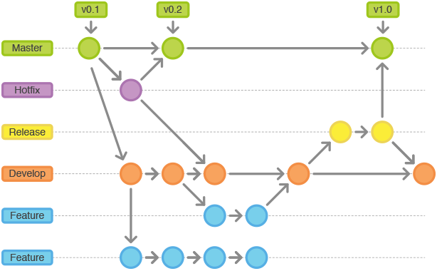

Git 常用命令#
GIT 优势#
- 由于是分布式，所有本地库包含了远程库的所有内容。
- 优秀的分支模型，打分支以及合并分支，方便。
- 快速，Git 由于代码都在本地，打分支和合并分支快速，使用个SVN的能深刻体会到这种优势。
GIT 与 SVN 最主要的区别#
- SVN 是集中式版本控制系统，版本库是集中放在中央服务器的，而干活的时候，用的都是自己的电脑，所以首先要从中央服务器哪里得到最新的版本，然后干活，干完后，需要把自己做完的活推送到中央服务器。集中式版本控制系统是必须联网才能工作，如果在局域网还可以，带宽够大，速度够快，如果在互联网下，如果网速慢的话，就纳闷了。
- Git 是分布式版本控制系统，那么它就没有中央服务器的，每个人的电脑就是一个完整的版本库，这样，工作的时候就不需要联网了，因为版本都是在自己的电脑上。既然每个人的电脑都有一个完整的版本库，那多个人如何协作呢？比如说自己在电脑上改了文件A，其他人也在电脑上改了文件A，这时，你们两之间只需把各自的修改推送给对方，就可以互相看到对方的修改了。
GIT 下载#
GIT 常用命令#
生成密钥#
ssh-keygen -t rsa -C '***@flc.io' # 按3个回车。 # 最后得到了两个文件：id_rsa和id_rsa.pub（window和linux在当前用户目录/.ssh目录下） # 其中id_rsa.pub即为公钥
设置 Git 的用户名和邮箱#
git config --global user.name 'flc' git config --global user.email '***@flc.io'
创建版本库#
-
初始化一个版本仓库
git init
-
克隆远程版本库（同时会自动初始化）
# 如克隆thinkphp源码 git clone https://github.com/top-think/thinkphp.git -
添加远程版本库（需要先初始化）
# 语法为 git remote add [shortname] [url] git remote add origin https://github.com/top-think/thinkphp.git
提交 / 推送代码#
# 查看文件状态 git status # 添加当前修改的文件到暂存区 git add . git add [file_path] # 指定文件 # 提交你的修改 git commit –m "你的注释" # 推送你的更新到远程服务器,语法为 git push [远程名] [本地分支]:[远程分支] git push origin master # 查看提交的日志 git log # 修改最后一次提交注释的，利用–amend参数 git commit --amend
分支管理#
-
本地分支管理（查看、切换、创建和删除）
git branch -r # 查看远程分支 git branch <new_branch> # 创建新的分支 git branch -v # 查看各个分支最后提交信息 git checkout <branch> # 切换到某个分支 git checkout -b <new_branch> # 创建新的分支，并且切换过去 git checkout -b <new_branch> <branch> # 基于branch创建新的new_branch git branch -d <branch> # 删除某个分支 git branch -D <branch> # 强制删除某个分支 (未被合并的分支被删除的时候需要强制) git push origin --delete <branch> # 删除远程分支
-
分支合并
git merge <branch> # 将branch分支合并到当前分支(Fast-Foward合并，不推荐) git merge <branch> --no-ff # 不要Fast-Foward合并，这样可以生成merge提交（推荐）
-
远程分支管理
git pull # 抓取远程仓库所有分支更新并合并到本地 git pull --no-ff # 抓取远程仓库所有分支更新并合并到本地，不要快进合并 git fetch origin # 抓取远程仓库更新 git merge origin/master # 将远程主分支合并到本地当前分支 git checkout -b <local_branch> origin/<remote_branch> # 基于远程分支创建本地分支 git push # push所有分支 git push origin <branch> # 将本地主分支推到远程分支 git push -u origin master # 将本地主分支推到远程(如无远程主分支则创建，用于初始化远程仓库) git push origin <local_branch> # 创建远程分支， origin是远程仓库名 git push origin <local_branch>:<remote_branch> # 创建远程分支 git push origin :<remote_branch> # 删除远程分支。先删除本地分支(git br -d <branch>)，然后再push删除远程分支 git push origin --delete <branch> # 删除远程分支，功能同上
远程仓库管理#
git remote -v # 查看远程服务器地址和仓库名称 git remote show origin # 查看远程服务器仓库状态 git remote add origin git@ github:robbin/robbin_site.git # 添加远程仓库地址 git remote set-url origin git@ github.com:robbin/robbin_site.git # 设置远程仓库地址(用于修改远程仓库地址) git remote rm <repository> # 删除远程仓库
更多教程#
工作流介绍#
流程图#

参考#
- http://www.cnblogs.com/cnblogsfans/p/5075073.html?utm_source=tuicool&utm_medium=referral
- 关键字：
git flow
分支命名规则#
- 主分支：
master - 开发分支：
develop - 功能分支：
feature/功能模块英文名，如：feature/user - 版本分支（预上线分支）：
release/功能模块英文名或版本号+年月日，如：release/user_20160101或release/v1.0.1_20160101 - 修复分支：
hotfix/修复功能英文名或原版本号+年月日，如：hotfix/user_20160101或hotfix/v1.0.1_20160101
版本号命名规则#
如：
v1.1.1.1→vA.B.C.D
规则说明
A: 大版本更新，如大改版或者结构大调整。由项目经理决定此版本编号B: 功能模块，如用户中心，订单中心等大模块更新或调整。由开发主管决定此版本编号C: 功能迭代更新，由开发组长决定此版本编号D: hotfix 修复版本编号，由开发组长决定此版本编号；默认新迭代的版本，此版本编号默认为0- 每个独立的版本编号更新后，当前版本号后的版本编号重置为0，优先级：
A > B > C > D